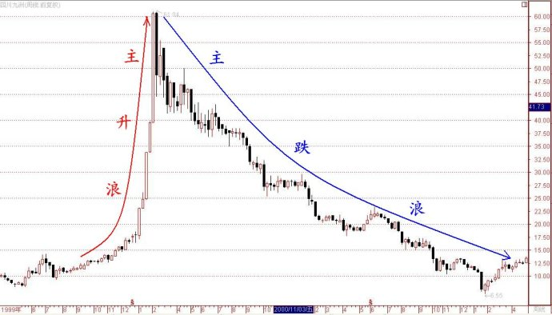
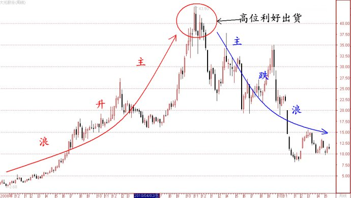

第181篇•教你炒股系列46:主升浪的成因（4）
谷为陵
我下面举几个控盘式庄家制造的主升浪案例。
首先，我举一下纯粹的资金操纵的主升浪案例。这类主升浪，是庄家在没有任何利好配合情况下发动的，是不折不扣的筹码游戏，因没有基本面的配合，因此，这类庄股股价必定会在主升浪的暴涨后，很快出现暴跌型的主跌浪，呈现的是最典型的暴涨暴跌的形态。这类股票在10年前的庄股时代盛极一时，现在也还存在，因篇幅所限，我现在仅举一个四川湖山（现更名为“四川九州”）的案例。
案例1：纯粹的资金操纵的主升浪案例——四川湖山
老股民应该还记得，在2000年的网络科技股行情里，虽然黑马遍地，但要论绝对股价，只有4只股票炒到了80元以上，它们是股价破百的亿安科技和清华紫光（清华紫光因刚上市，还算不上是只庄股），一只是最高价达到了83元（不复权，下同）的海虹控股，另一只就是四川湖山。在这几只股票中，四川湖山绝对是个另类，颇具传奇色彩：其一，是该股自始至终没有给出任何与网络科技沾边的利好，但该股的股价却悄悄跟随那些网络科技股上涨，竟在短短的一年内上涨了7倍，且最高价也达到了79.45元的高位，这个庄家真个是浑身是胆也。其二，在庄家时代末期，监管部门对于那些曾经被恶炒的庄股进行了大规模的“秋后算账”，亿安科技遭到重罚，海虹控股被爆基金违规锁仓，但是，四川湖山却没有一点事，始终没有听到关于该股和该股庄家的任何负面的消息，我不得不佩服这个庄家的超强的整体运作能力。
下面是该股1999年5月至2002年1月的周K线图（前复权）：

从上图可以看出，在该股短期暴涨型的主升浪之后，紧接着就是主跌浪，且该主跌浪最终将先前主升浪的涨幅全部吞掉，股价还创出了新低。
其次，我举一下庄家先将股价拉到高位后，再配合利好出货的案例。这类主升浪的特点，在主升浪的发动阶段，与前面所讲的纯粹资金推动的主升浪很相似，在主升浪阶段，也是没有任何利好配合，随着股价不断上涨，市场的猜测和传闻满天飞，但上市公司就是“徐庶进曹营，一言不发”，让市场投资者感到莫名其妙。待这类股票的主升浪涨幅达到了几倍甚至几十倍后，上市公司才非常适时地公告一个当时最具震撼力的、热门的利好题材，并让投资者感到以这样大的利好题材去衡量，该股的估值还不算高，可怜的投资者在题材公告后还纷纷冲进去，活生生地被套在股价的山尖上。更可怕的是，这类庄股的利好题材往往不会兑现，非常害人。这样的案例也很多，我在此仅举一个大元股份的案例。
案例2：主升浪完成后才出利好，配合庄家出货的案例——大元股份
自2008年10月至2010年10月，大元股份的股价自最低点的2.68元，上涨到了最高的43.9元，涨幅达到了15倍！在此期间，虽然该股涨势如虹，但却没有任何令人期待的利好出现，真让人叹为观止。我认为，该庄家的坐庄力度，已经超越了10年前庄家时代的绝大多数庄家，甚至连“德隆系”也会自叹弗如。当然，按照坐庄的规律，庄家最终总是要变现的。当时，很多市场投资者都在猜想，大元股份的股价涨幅这样大，股价这样高，上市公司该出怎样的利好才能够最终收场呢？
其实，这不用他人操心，上市公司自有妙招。不知大家是否记得，在2010年10月左右，什么题材最火爆？除了稀土概念外，就属黄金概念了，当时的几只黄金龙头股的股价都在50～60元以上。于是，大元股份就公告了“涉金”题材，转身而成了一只黄金股。由于该股的总股本只有2亿股，属于小盘股，作为小盘黄金概念股，该股当时43元的股价看起来还不离谱，毕竟那几股黄金股的股价还是比它高很多嘛。我想，如果该股放到现在出题材，一定会出“涉稀土”的题材，这是必须的。事实上，大元股份的“黄金事业”至今还没有整明白，不过，非常明朗的是，该股股价却自2010年10月的最高价一路下跌，至今年初跌到了最低的8元，跌幅高达80%！
下面是大元股份自2008年10月至今的周K线图（不复权）：

（未完待续）